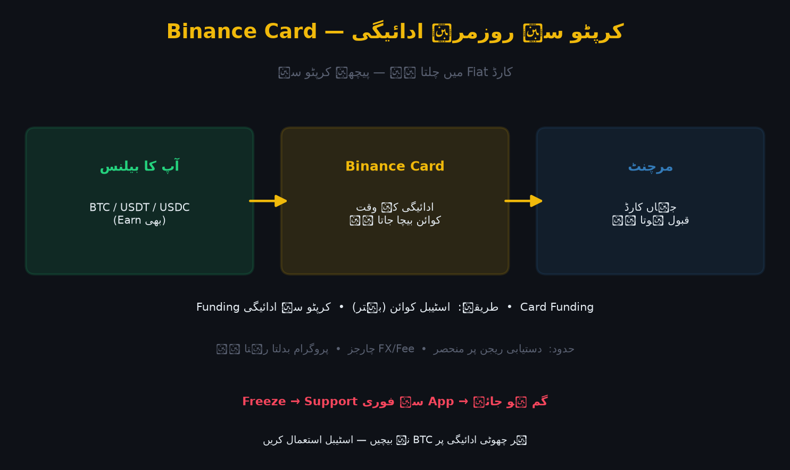

Binance Card ایک ڈیبٹ کارڈ ہے جو آپ کے بنائیں والٹ کو روزمرہ خریداری سے جوڑ دیتا ہے۔ جہاں کارڈ قبول ہو، وہاں نقصان کا پردہ کرپٹو (عموماً اسٹیبل کوائن) سے ہوتا ہے — یعنی آپ کو پہلے ہر بار ایکسچینج سے Fiat نکالنے کی ضرورت نہیں۔

تصویر 53.1: Binance Card کا خاکہ — کرپٹو بیلنس سے کارڈ تک بہاؤ، اور Fiat (PAY) پر کرپٹو بیلنس سے ادائیگی کا مقام۔
🎯 اس باب میں آپ سیکھیں گے
Binance Card کیا ہے اور یہ کس طرح کام کرتا ہے
Card Funding اور کرپٹو سے ادائیگی کا فرق
کارڈ کے فوائد اور حدود
ریجن کے لحاظ سے دستیابی
کارڈ کے فیس اور FX (کرنسی) چارجز
کارڈ کی حفاظت اور گمشدگی پر عمل
📖 53.1 Card کیسے کام کرتا ہے؟
آپ کا Spot/فانڈنگ بیلنس (BTC/USDT/BUSD/EUR وغیرہ)
↓ (ادائیگی کے وقت برتری سے کرپٹو کٹتا ہے)
Binance Card (Fiat گلیں)
↓
مرچنٹ (کارڈ قبول کرنے والا)
کارڈ Fiat میں چلتا ہے، لیکن پیچھے کرپٹو سے چلتا ہے۔
ادائیگی کے وقت چنا ہوا اثاثہ (مثلاً USDT) بیچا جاتا ہے۔
سپورٹ شدہ نیٹ ورک میں عام کارڈ کی طرح استعمال ہوتا ہے۔
📖 53.2 Card Funding بمقابلہ کرپٹو کٹوتی
طریقہ
کیسے کام
نوٹ
کرپٹو سے ادائیگی
ادائیگی کے وقت کوائن بیچا جاتا ہے
قیمت کے اتار چڑھاؤ سے متاثر
Fiat/Card Funding
کارڈ میں Fiat/اسٹیبل جمع
فارمز کے کچھ حصوں میں
Stablecoin
USDT/USDC/BUSD سے ادائیگی
سب سے عام اور آسان
بہتر مشق: Card کے لیے عموماً اسٹیبل کوائن رکھیں — ہر خریداری پر BTC/ETH بیچنا ٹیکس اور کمپاؤنڈنگ کے حساب سے اچھا نہیں۔
📖 53.3 فوائد اور حدود
فوائد:
کرپٹو کو ہر بار فیاٹ میں نکالنے کی ضرورت نہیں
کچھ پروگراموں میں Cashback (عام طور پر BNB میں)
منیجمنٹ: کارڈ کے ساتھ ٹارگٹ خریداری (کارڈ چھپائیں/Freeze)
موبائل ایپ سے فوری Freeze/Unfreeze
حدود:
دستیابی ریجن پر منحصر — ہر ملک میں دستیاب نہیں
کارڈ قبول کرنے والے مرچنٹ اور حدود
FX/Fee چارجز بین الاقوامی لین دین پر
کچھ ممالک میں ریگولیٹری وجوہ سے کارڈ پروگرام بند/معطل ہو سکتا ہے
اہم: کارڈ کی دستیابی اور اس کے پروگرام کی شرائط بہت بدلتی ہیں۔ اپنے ریجن کے لیے بائننس کے آفیشل کارڈ پیج پر موجودہ شرائط دیکھیں۔
📖 53.4 فیس اور FX
ممکنہ چارجز:
- کارڈ جاری کرنے کی فیس (کچھ پروگراموں میں صفر)
- بین الاقوامی/FX ٹرانزیکشن فیس
- ATM Withdrawal (اگر سپورٹ ہو)
- غیر فعال کارڈ فیس (کچھ جگہوں پر)
نصیحت: کارڈ استعمال سے پہلے فیس لِسٹ پڑھ لیں — چھوٹی چھوٹی فیسیں سالانہ کافی بنتی ہیں۔
📖 53.5 حفاظت اور گمشدگی
✅ App میں کارڈ کو Freeze/Unfreeze کریں
✅ کارڈ نمبر نہ شیئر کریں (تحفّظ: Virtual Card)
✅ گم ہو جائے → فوری Freeze → Support
✅ سنیک مرچنٹ پر CVV نہ دیں
✅ Pin کسی کے ساتھ نہ شیئر کریں
✅ 2FA/Passkey آن رکھیں
⚠️ عام غلطیاں
❌ دستیابی کا فرض کر لینا — ہر ریجن میں کارڈ نہیں ہے۔
❌ BTC سے ہر چھوٹی ادائیگی — ٹیکس/کمپاؤنڈنگ نقصان؛ اسٹیبل بہتر۔
❌ فیس/FX چارجز نہ پڑھنا — سالانہ خرچ بن جاتا ہے۔
❌ کارڈ بڑی رقم کے لیے واحد ذریعہ — نقد/بینک بھی رکھیں۔
❌ گمشدگی پر فوری Freeze نہ کرنا۔
❌ کرپٹو ٹیکس کے قوانین کو نظر انداز کرنا — ہر ریجن کے اپنے قواعد ہیں۔
❌ Support کی تصدیق کے بغیر کارڈ تفصیلات دینا۔
✅ خلاصہ
Binance Card = کرپٹو سے روزمرہ خریداری کا ڈیبٹ کارڈ۔
ادائیگی کرپٹو سے ہوتی ہے مگر کارڈ Fiat گلیں میں چلتا ہے۔
Card Funding میں اسٹیبل کوائن رکھنا سب سے آسان ہے۔
دستیابی اور فیس ریجن پر منحصر ہیں۔
گمشدگی پر فوری Freeze اور Support۔
📝 عملی مشق
آپ کے ریجن میں بائننس Card دستیاب ہے یا نہیں — آفیشل پیج پر چیک کریں۔
اگر دستیاب ہو: کرپٹو/اسٹیبل انتخاب کے فائدے-نقصان لکھیں۔
کارڈ کے ممکنہ فیسوں کی فہرست بنائیں۔
"کارڈ گم ہو جائے تو" 5 قدم لکھیں۔
Virtual Card بمقابلہ Physical Card کا موازنہ کریں۔
🧠 یاد رکھیں
"Card = کرپٹو کو روزمرہ خریداری سے جوڑنے کا پل۔" اصول: (1) دستیابی/فیس اپنے ریجن کے مطابق جاچیں، (2) ادائیگی اسٹیبل سے کریں، (3) App سے Freeze ہمیشہ ہاتھ میں رکھیں۔